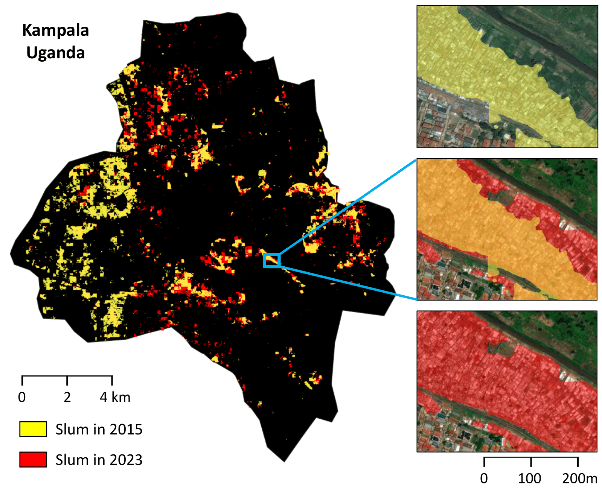
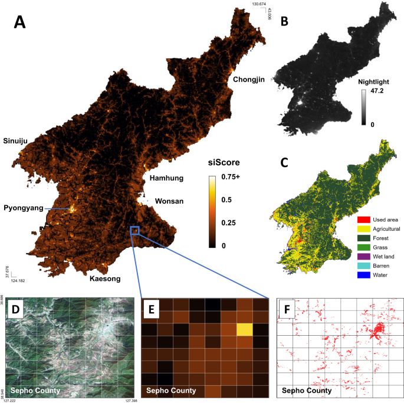

01
Economic Measurement from Geospatial and Large-Scale Data
How can we measure overlooked places and populations when reliable ground truth is limited?
We develop machine learning methods that turn satellite imagery, spatial signals, and other large-scale data into reliable measures of local economic activity, inequality, environmental exposure, and social change.
Selected Publications
-

Generalizable Slum Detection from Satellite Imagery with Mixture-of-Experts AAAI Conference on Artificial Intelligence (AAAI 2026) Fig. 5, Lee et al. · CC BY-NC-SA 4.0 -

A human-machine collaborative approach measures economic development using satellite imagery Nature Communications (2023) Fig. 2, Ahn et al. · CC BY 4.0